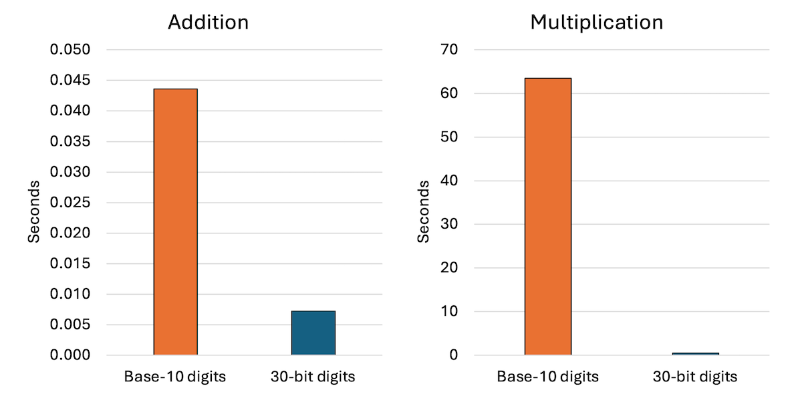
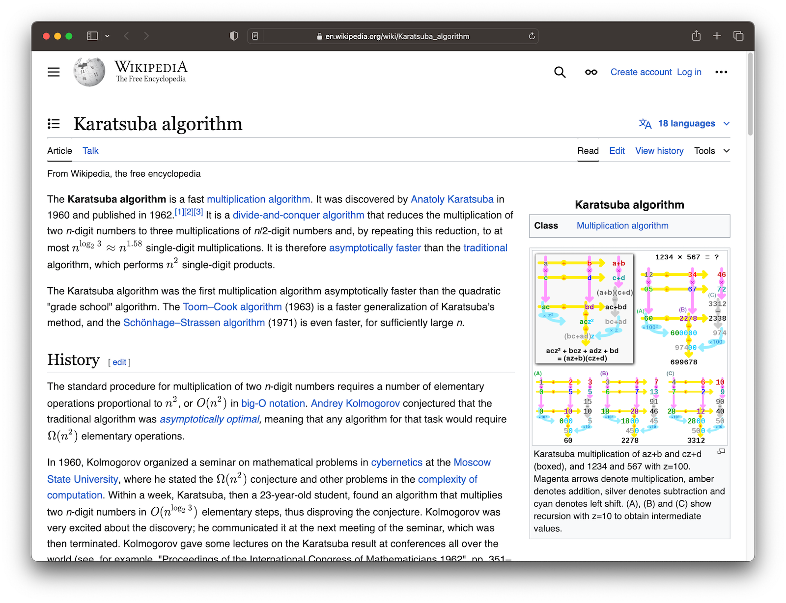

Associate Teaching Professor
Carnegie Mellon University
I'm down a rabbit hole of learning how bignums work. See the first post, making a bignum library for fun, where I implement a working arbitrary-precision number library with some basic operations.
My naive approach represents numbers as strings of decimal digits. The number 321 becomes '3', '2', '1'. Then addition and multiplication is performed similar to how we learned in school to do it digit by digit.
We can do much better!
In this post, I improve how numbers are stored, implement a faster multiplication algorithm, and benchmark the time improvements.
The most obvious optimization to make is to use a much larger base for the "digits". For example, rather than an array of digits that each range from 0 to 9, we can store an array of number chunks that each range from 0 to a really big number. It will allow us to use memory much, much more efficiently. It will also greatly reduce the number of steps to perform our addition and multiplication since there are fewer digits.
There are tradeoffs for how many bits to use per chunk: memory, arithmetic performance, cache locality, overflow management, native CPU operations, complexity of our code, etc. Looking for inspiration, I saw CPython uses 30-bit digits and GNU Multiple Precision Arithmetic Library uses 64-bit digits on 64-bit CPUs.
I didn't do an in-depth analysis of what an optimal size may be, but even using 30-bit digits means the numbers can get very large with a few digits. Each 30-bit digit can hold 9 decimal digits. For example, 987654321 will fit inside a single digit and 987654321987654321 will fit in just two digits! This is already more precision than I've ever needed, and the library can use an arbitrary number of these digits in our bignum.
Let's implement the 30-bit digits. It will make our code simpler since the sum of any two digits will not overflow using a uint32 and the product won't overflow a uint64.
typedef struct {
uint32_t *digits; // Use 30-bit digits.
int size;
} BigNum;
void bignum_init(BigNum *n, const char *str) {
int len = strlen(str);
int num_digits = (len + 8) / 9; // Each 30-bit chunk can store up to 9 base-10 digits.
n->size = num_digits;
n->digits = calloc(n->size, sizeof(uint32_t)); // Initialize with zeros.
for (int i = 0; i < len; i++) {
int digit_pos = i / 9;
int offset = i % 9;
uint32_t digit = str[len - 1 - i] - '0'; // Convert from ASCII.
uint32_t multiplier = 1;
for (int j = 0; j < offset; j++) {
multiplier *= 10; // Correctly place the digit.
}
n->digits[digit_pos] += digit * multiplier;
}
}
The bignum is now made up of an array of uint32_t instead of char. The bignum_init function will convert a base-10 number string to an array of 30-bit digits. First, it calculates how many 30-bit digits will be needed and initializes them to zero. Then it loops through the string from least significant digit to most significant digit, converting them to chunks of 9 digits, each stored in a uint32_t. It will flow to the next 30-bit digit as needed.
In order to easily test this, we should revise the bignum_print function. Previously, we would just loop through the base-10 digits and print them. Now we have to handle three different cases just for zeros: leading zeros in a digit, a middle chunk that is zero, and the entire bignum being zero.
void bignum_print(const BigNum *n) {
printf("BigNum: ");
int leading = 1;
for (int i = n->size - 1; i >= 0; i--) {
if (leading) {
printf("%u", n->digits[i]);
leading = 0;
} else {
printf("%09u", n->digits[i]); // Print with leading zeros.
}
}
if (leading) {
printf("0"); // If the number is zero, print a single zero.
}
printf("\n");
}
Try creating a bignum from "987654321987654321". Does it print correctly? It does for me! Inspect the digits field to validate it is storing them in the way you are imagining.
We have to modify the addition and multiplication functions to also operate on these 30-bit digits. They really aren't much different though.
void bignum_add(BigNum *result, const BigNum *a, const BigNum *b) {
int max_size = a->size > b->size ? a->size : b->size;
result->digits = calloc(max_size + 1, sizeof(uint32_t)); // Initialize with zeros.
uint32_t carry = 0;
int i;
for (i = 0; i < max_size || carry; i++) {
uint32_t sum = carry;
if (i < a->size) sum += a->digits[i];
if (i < b->size) sum += b->digits[i];
result->digits[i] = sum % 1000000000; // Store the last 30 bits.
carry = sum / 1000000000; // Carry any overflow.
}
result->size = (carry ? i + 1 : i); // Adjust size if needed.
}
We still perform addition digit by digit, though this time with 30-bit digits (actually using 109 but bear with me).
The updated multiplication is also virtually the same. We use a uint64_t to capture any overflow though.
void bignum_multiply(BigNum *result, const BigNum *a, const BigNum *b) {
int max_size = a->size + b->size;
result->digits = calloc(max_size, sizeof(uint32_t));
result->size = max_size; // Max size we will need.
for (int i = 0; i < a->size; i++) {
uint64_t carry = 0;
for (int j = 0; j < b->size; j++) {
int index = i + j;
uint64_t product = (uint64_t)a->digits[i] * (uint64_t)b->digits[j] + (uint64_t)result->digits[index] + carry;
result->digits[index] = product % 1000000000; // Store the last 30 bits of the product
carry = product / 1000000000; // Carry any overflow.
}
result->digits[i + b->size] += carry; // Add any carry.
}
// Trim any leading zeros.
while (result->size > 1 && result->digits[result->size - 1] == 0) {
result->size--;
}
}
Try it out. If you add 987654321987654321 to 123456789123456789 then you should get 1111111111111111110. Multiplying them should give you 121932631356500531347203169112635269.
Everyone knows that any attempt at optimizing requires a rigorous, scientific benchmark to understand the improvements.
To compare the original base-10 digits to this 30-bit digit version, I'll run add and multiply repeatedly on random numbers. I made a function to generate random bignums from n-length strings.
The benchmarking code:
char* generateRandomNumberString(int length) {
char *num = malloc((length + 1) * sizeof(char));
for (int i = 0; i < length; i++) {
num[i] = '0' + (rand() % 10);
}
num[length] = '\0';
return num;
}
int main() {
srand(time(NULL));
int iterations = 10000;
int numLength = 1000; // Length of the random numbers.
double total_addition_time = 0.0;
double total_multiplication_time = 0.0;
for (int i = 0; i < iterations; i++) {
char *str1 = generateRandomNumberString(numLength);
char *str2 = generateRandomNumberString(numLength);
BigNum num1, num2, sum, product;
bignum_init(&num1, str1);
bignum_init(&num2, str2);
bignum_init(&sum, "");
bignum_init(&product, "");
// Benchmark addition.
clock_t start = clock();
bignum_add(&sum, &num1, &num2);
clock_t end = clock();
total_addition_time += (double)(end - start) / CLOCKS_PER_SEC;
// Benchmark multiplication.
start = clock();
bignum_multiply(&product, &num1, &num2);
end = clock();
total_multiplication_time += (double)(end - start) / CLOCKS_PER_SEC;
bignum_free(&num1);
bignum_free(&num2);
bignum_free(&sum);
bignum_free(&product);
free(str1);
free(str2);
}
printf("Total Addition Time: %f seconds\n", total_addition_time);
printf("Total Multiplication Time: %f seconds\n", total_multiplication_time);
return 0;
}
How does it compare to the previous base-10 digits implementation on 10,000 operations with 1,000-digit numbers?
For addition, it is an 83% improvement from 0.04 seconds to 0.007 seconds. For multiplication, it is a 99% improvement from 63 seconds to 0.43 seconds. Wow! I knew the schoolyard multiplication algorithm with base-10 digits would be slow, but I did not expect this kind of speed up.
We aren't done yet though.
From one of my college courses, I recalled algorithms for multiplication that are faster than the schoolyard approach we are using. A quick search shows the Karatsuba algorithm to be popular for these sorts of things. Instead of multiplying two n-digit numbers, it does multiplication on three n/2-digit numbers, which apparently is a huge improvement.
You can see my Karatsuba multiplication function on GitHub. I adapted the pseudocode from Wikipedia with the help of Copilot.
How much faster is it?
Is it actually 2% slower using the same benchmark parameters.
Why? Apparently Karatsuba can be slower for "smaller" numbers due to overhead and additional operations. In fact, CPython only uses it for numbers with more than 70 30-bit digits. Those are big numbers!
Fair enough, so I changed the benchmark to use random numbers with 10,000 digits instead of 1,000 and did see an improvement: 39.88 seconds for traditional multiplication versus 16.27 seconds for Karatsuba multiplication. A 59% improvement! I suspect it will get better and better as the number length grows.
Alright, so we have made two major optimizations to the bignum library and measured the impact on running time. Using larger digits had a huge effect.
If I were to continue working on this project, I'd focus on usefulness. It is still missing core features that you'd expect from even the most basic bignums: